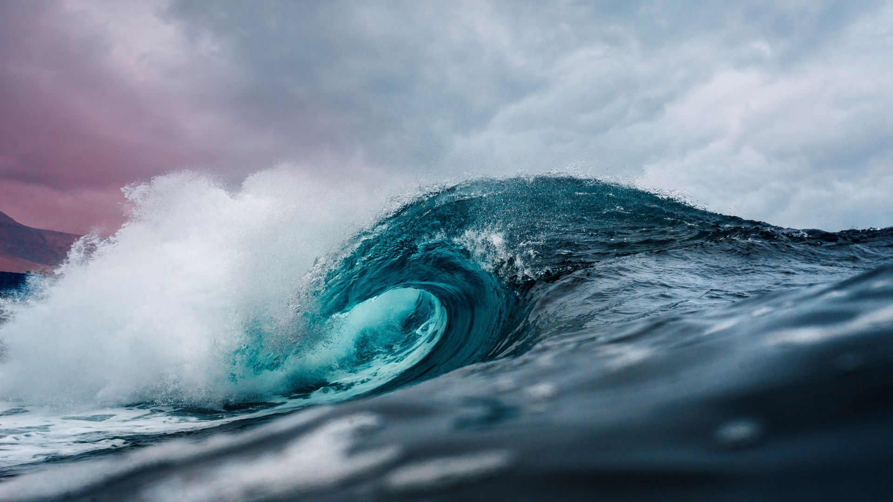
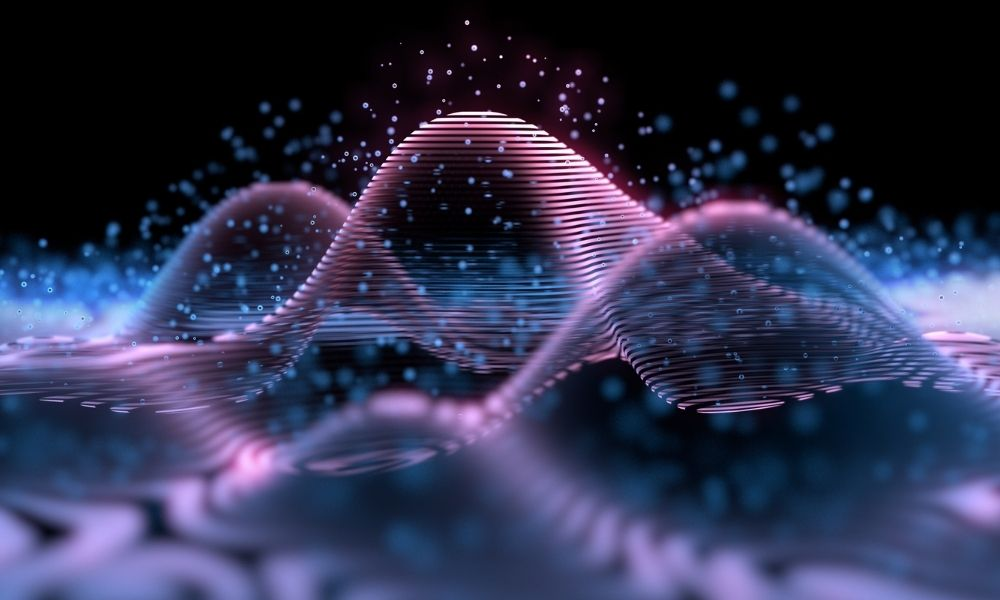

CP1 Motion
Describe the difference between weight and mass.
Explain the difference between a vector and a scalar quantity.
Describe the difference between displacement and distance.
Describe the difference between velocity and speed.
Define the terms: acceleration, force, momentum, energy.
Recall and use equations relating distance, speed and time.
Describe how speed can be measured in a school laboratory.
Recall typical speeds for walking, running, cycling and travelling by car.
Interpret distance/time graphs (including recognising what the steepness of the line tells you).
Represent journeys on distance/time graphs.
Determine speed from the gradient of a distance/time graph.
Recall the formula relating acceleration, velocity and time.
Use the formula relating acceleration, velocity and time.
Recall the equation relating acceleration, velocity and distance.
Use the equation relating acceleration, velocity and distance.
Recall the acceleration in free fall.
Estimate the magnitudes of some everyday accelerations.
Represent journeys on velocity/time graphs.
Interpret velocity/time graphs qualitatively.
Calculate uniform accelerations from the gradients of velocity/time graphs.
Determine the distance travelled from the area under a velocity/time graph.
CP3 Conservation of Energy
Explain, using examples, that energy is conserved.
Give examples of energy being moved between different stores.
Interpret diagrams that represent energy transfers.
Represent energy transfers using diagrams.
Describe what happens to wasted energy in energy transfers.
Explain some ways in which energy is transferred wastefully by mechanical processes.
Explain some ways of reducing unwanted energy transfers in mechanical processes.
Define what efficiency means.
H Explain how efficiency can be increased.
Recall and use the formula for calculating energy efficiency.
Describe the ways in which energy can be transferred by heating.
Describe ways of reducing unwanted energy transfers using thermal insulation.
Explain how different ways of reducing energy transfer by heating work.
Define the meaning of thermal conductivity.
Describe the effects of the thickness and thermal conductivity of the walls of a building on its rate of cooling.
Describe how different factors affect the gravitational potential energy stored in an object.
Recall and use the equation for gravitational potential energy.
Describe how different factors affect the kinetic energy stored in an object.
Recall and use the equation for kinetic energy.
List the non-renewable energy resources in use today.
Describe the advantages and disadvantages of non-renewable energy resources.
Compare the advantages and disadvantages of non-renewable energy resources.
Explain how the use of non-renewable energy resources is changing.
List the renewable energy resources in use today.
Describe the source of energy for different renewable resources.
Describe the ways in which the different energy resources are used.
Explain why we cannot use only renewable energy resources.
Explain how the use of renewable energy resources is changing.

CP4 Waves
Recall that waves transfer energy and information but do not transfer matter.
Describe waves using the terms frequency, wavelength, amplitude, period and velocity.
Describe the differences between longitudinal and transverse waves.
Give examples of transverse and longitudinal waves.
Recall the equation relating wave speed, frequency and wavelength.
Use the equation relating wave speed, frequency and wavelength.
Recall the equation relating wave speed, distance and time.
Use the equation relating wave speed, distance and time.
Describe how to measure the velocity of sound in air.
Describe how to measure the velocity of waves on the surface of water.
Describe what refraction is.
Describe how the direction of a wave changes when it goes from one material to another.
Explain some effects of the refraction of light (explanations in terms of changing speeds are not expected).
H Explain how a change in wave speed can cause a change in direction.

CP5 Light and the Electromagnetic Spectrum
Recall examples of electromagnetic waves.
Describe the common features of electromagnetic waves.
Describe the transfer of energy by electromagnetic waves.
Describe the range of electromagnetic waves that our eyes can detect.
H Describe an effect caused by the different velocities of electromagnetic waves in different substances.
Recall the groups of waves in the electromagnetic spectrum in order.
Recall the colours of the visible spectrum in order.
Describe how the waves in the electromagnetic spectrum are grouped.
H Describe some differences in the ways that different parts of the electromagnetic spectrum are absorbed and transmitted.
H Describe some differences in the ways that different parts of the electromagnetic spectrum are refracted and reflected.
H Describe how long wavelength electromagnetic waves are affected by different substances.
H Explain the effects caused by long wavelength electromagnetic waves travelling at different velocities in different substances.
Describe some uses of radio waves.
Describe some uses of microwaves.
Describe some uses of infrared.
Describe some uses of visible light.
H Describe how radio waves are produced and detected by electrical circuits.
H Describe how short wavelength electromagnetic waves are affected by different substances.
H Explain the effects caused by short wavelength electromagnetic waves travelling at different velocities in different substances.
Describe some uses of ultraviolet radiation.
Describe some uses of X-rays.
Describe some uses of gamma rays.
Describe how the potential danger of electromagnetic radiation depends on its frequency.
Describe the harmful effects of microwave and infrared radiation.
Describe the harmful effects of ultraviolet radiation, X-rays and gamma rays.
Recall the nature of radiation produced by changes in atoms and their nuclei.
Recall that absorption of radiation can cause changes in atoms and their nuclei.